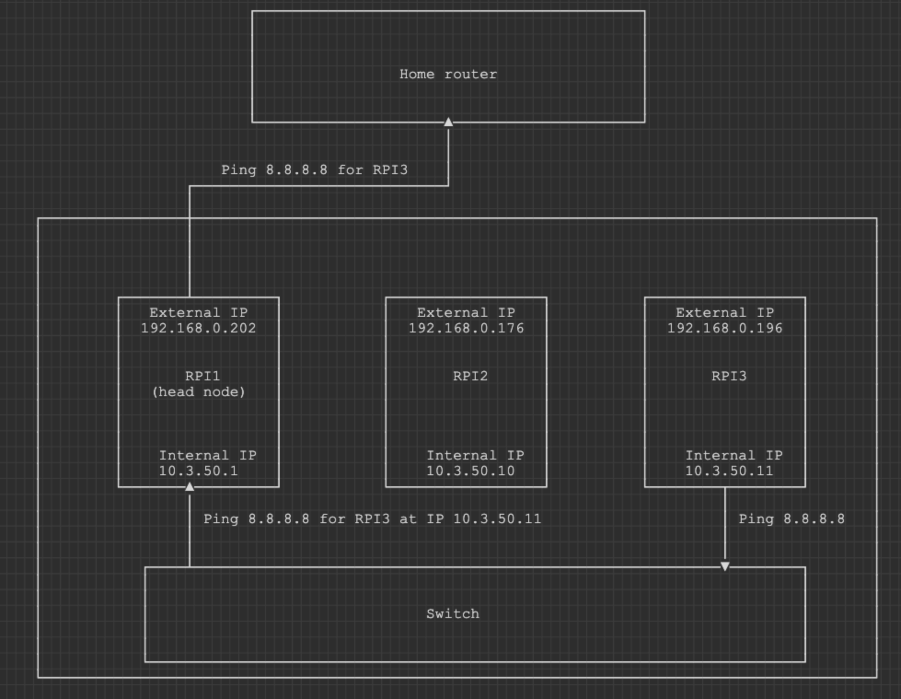

(Re)setting up my home Raspberry PI cluster - part 1
25 Dec 2024Introduction
A while back I was working on setting up 3 RPIs based on this guide. Back then I was too excited to play around with new hardware and set up everything as soon as possible. I did not really account for the fact stuff might break and there is no real option how to restore it. Of course, I could have followed the same guide from scratch, but how many times would I have to repeat the same process? Dreading this process, I have set this project on a shelf.
In my day job just like any good SRE engineer, I am guided by DevOps principles of having repeatable processes. That’s why the tools like Terraform, CloudCDK, Packer and Ansible are this popular and relevant right now in my opinion.
So I thought that this holiday season, I will slow down the process a bit and re-assemble my cluster and configure a proper process around it.
It is worth noting that this project is heavily influenced by the original guide I have used initially. Usage of Ansible for this project is inspired by www.ansiblefordevops.com and other Jeff Geerling projects.
What do we have?
- 3 Rapsberry Pis 4B model
- 3 PoE hats
- Uctronics Complete Enclosure for Raspberry Pi Clusters
- 2 8cm cooling fans
- Netgear GS305P unmanaged switch
- 3 Ethernet cables
- A few old USB 3.0 and C cables
What is the end goal?
The idea is to have one RPI(we will call it a head node until a proper name is given) acting as a router and hosting DHCP server. Other RPIs would get IPs in a dedicated subnet and communicate with the outside world through the head node. I still want to preserve possibility of connecting to nodes using their home network IPs. This way I can preserve access if I break the head node.

Fans set up
Last time I was setting up this cluster, I have cut some corners because I did not have soldering station, but this time I ready to set thing right. Two fans came with standard pin connector. It is not an option to use GPIO to power them up as PoE hat will take all the pins. I have used some of my old USB cables and got a pair of USB powered fans.
Switch with PoE
This allowed for a “clean” looking setup without extra power cables and power sources.
RPIs setup
The setup is fairly straight forward. PoE hats were mounted on the top of GPIO pins.
For this project, I have decided to use Raspberry Pi OS Lite as I am planning to have a Kubernetes cluster here later on.
So it was very convenient to use Raspberry PI Imager to configure WLAN access and hostnames.
Node naming
Hostnames I have decided to use are Caspar, Balthasar and Melchior. These are also known as Magi from the Gospel of Matthew, but I have chosen these names after 3 computers(also collectively referred as MAGI) in anime series Evangelion.
Booting up the first node
As soon as a SD card was installed and Ethernet cable is connected the head node - Caspar was booting up.
Now, to connect to Casoar we need its IP first. As I have managed to forget admin password from my router, I had to dust up my apr knowledge with a useful arp-scan utility:
$ sudo arp-scan --interface=en0 192.168.0.0/24
Password:
Interface: en0, type: EN10MB, MAC: <REDACTED>, IPv4: 192.168.0.249
Starting arp-scan 1.10.0 with 256 hosts (https://github.com/royhills/arp-scan)
192.168.0.1 50:91:e3:b9:80:8c (Unknown)
192.168.0.90 12:b4:c6:3a:3d:44 (Unknown: locally administered)
192.168.0.121 8e:f6:38:a3:fa:53 (Unknown: locally administered)
192.168.0.177 26:41:24:e0:3b:b7 (Unknown: locally administered)
192.168.0.202 e4:5f:01:fc:a9:94 Raspberry Pi Trading Ltd
526 packets received by filter, 0 packets dropped by kernel
Ending arp-scan 1.10.0: 256 hosts scanned in 1.833 seconds (139.66 hosts/sec). 4 responded
Knowing Caspar’s IP we can test out some Ansible .
I have created inventory.ini with the following content:
[magi]
192.168.0.202
Using this file we can get free memory on the device using the following command:
$ ansible magi -a "free -h" -u pi
192.168.0.202 | CHANGED | rc=0 >>
total used free shared buff/cache available
Mem: 3.7Gi 174Mi 3.5Gi 1.2Mi 139Mi 3.5Gi
Swap: 511Mi 0B 511Mi
Okay, now that we know that Caspar is live and kicking we start implementing its router capabilities.
DHCP setup
We will use a playbook to set up DHCP server which we will call dhcp-setup-playbook.yaml.
First of all, we want to run apt-get update and apt-get upgrade -y on our system to make sure that we stay up to date. For this will add the following content into this notebook:
- name: DHCP setup
hosts: magi[0] #we want to run this playbook only on Caspar
become: yes #at least most of the commands will require super user access
tasks:
- name: Update the package list
apt:
update_cache: yes
- name: Upgrade all packages
apt:
upgrade: dist
Currently, eth0 is disconnected, but it has a connection available. Its status can be checked through ifconfig or nmcli.
eth0: disconnected
"eth0"
1 connection available
ethernet (bcmgenet), e4:5f:01:fc:a9:93, hw, mtu 1500
We need to add a few tasks to connect eth0:
- name: Check if eth0 is disconnected
ansible.builtin.shell:
cmd: "nmcli device status | grep -E '^eth0' | awk '{print $3}'"
register: eth0_status
failed_when: eth0_status.rc != 0 and 'eth0' not in eth0_status.stdout
- name: Debug the status of eth0
debug:
msg: "Interface eth0 is currently "
This would allow us to check the status of eth0. We don’t want to reconfigure it if eth0 is already connected.
Then based on guide let’s modify the connection and restart it only if it is in status disconnected or connecting(about this status I have learnt accidentally, when I have wiped Caspar clean to test out all my playbooks from scratch. It seems to appear when the system is loading and interfaces trying to figure out their status).
- name: Configure Wired connection 1 with static IP
when: eth0_status.stdout in ["disconnected", "connecting"]
ansible.builtin.command:
cmd: nmcli con mod "Wired connection 1" ipv4.addresses ipv4.method manual
- name: Bring Wired connection 1 down
when: eth0_status.stdout in ["disconnected", "connecting"]
ansible.builtin.command:
cmd: nmcli con down "Wired connection 1"
- name: Bring Wired connection 1 up
when: eth0_status.stdout in ["disconnected", "connecting"]
ansible.builtin.command:
cmd: nmcli con up "Wired connection 1"
Now that eth0 will appear connected after a single run of the playbook(ansible-playbook dhcp-setup-playbook.yaml -u pi).
$ nmcli
...
eth0: connected to Wired connection 1
"eth0"
ethernet (bcmgenet), E4:5F:01:FC:A9:93, hw, mtu 1500
inet4 10.3.50.1/32
route4 10.3.50.0/24 metric 0
inet6 fe80::67a:8941:9ec7:7ddd/64
route6 fe80::/64 metric 1024
...
If we re-run this playbook, you will see that some steps are skipped because of when statements validating eth0_status.stdout in ["disconnected", "connecting"].
Also, we don’t want to hardcode too much information in variables files, so let’s grap MAC address and save it for the future use.
- name: Extract the MAC address of eth0
ansible.builtin.set_fact:
eth0_mac: "{ { ansible_facts['eth0']['macaddress'] } }" #nevermind this awkward space between the brackets. otherwise it would not render correctly
Next, we need DHCP server.
- name: Install DHCP server
apt:
name: isc-dhcp-server
In the heart of this dhcp server lies a config file(/etc/dhcp/dhcpd.conf) that we need to create.
We will template it using the saved earlier MAC address of eth0 and some input variables which namely are:
---
main_node_static_ip: 10.3.50.1
cluster_subnet: 10.3.50.0
cluster_broadcast: 10.3.50.255
cluster_subnet_netmask: 255.255.255.0
cluster_subnet_starting_ip: 10.3.50.10
cluster_subnet_ending_ip: 10.3.50.20
non_cluster_subnet: 192.168.0.0
non_cluster_netmask: 255.255.255.0
This variables are stored locally in group_vars/all.yaml on my machine.
Below you can find a template for /etc/dhcp/dhcpd.conf stored as templates/dhcpd.conf on my machine.
#once again nevermind this awkward space between the brackets. otherwise it would not render correctly
ddns-update-style none;
authoritative;
log-facility local7;
# No service will be given on this subnet
subnet { { non_cluster_subnet } } netmask { { non_cluster_netmask } } {
}
# The internal cluster network
group {
option broadcast-address { { cluster_broadcast } };
option routers { { main_node_static_ip } };
default-lease-time 600;
max-lease-time 7200;
option domain-name "cluster";
option domain-name-servers 8.8.8.8, 8.8.4.4;
subnet { { cluster_subnet } } netmask { { cluster_subnet_netmask } } {
# this is important as DHCP server will issue IPs sequally. So these two values help to set a predictable range
range { { cluster_subnet_starting_ip } } { { cluster_subnet_ending_ip } };
# Head Node
host cluster {
hardware ethernet { { eth0_mac } };
fixed-address { { main_node_static_ip } };
}
}
}
This template will be rendered by the following task:
- name: Create /etc/dhcp/dhcpd.conf
ansible.builtin.template:
src: dhcpd.conf
dest: /etc/dhcp/dhcpd.conf
owner: root
group: root
mode: 0644
We also need to let DHCP server know about the config file and make some changes to /etc/hosts
- name: Configure /etc/default/isc-dhcp-server
ansible.builtin.copy:
content: |
DHCPDv4_CONF=/etc/dhcp/dhcpd.conf
DHCPDv4_PID=/var/run/dhcpd.pid
INTERFACESv4="eth0"
dest: /etc/default/isc-dhcp-server
owner: root
group: root
mode: '0644'
- name: Configure /etc/hosts
ansible.builtin.copy:
content: |
127.0.0.1 localhost
::1 localhost ip6-localhost ip6-loopback
ff02::1 ip6-allnodes
ff02::2 ip6-allrouters
127.0.1.1 caspar
127.0.1.1 cluster
10.3.50.1 cluster
dest: /etc/hosts
owner: root
group: root
mode: '0644'
At this point, the guide points to node reboot, so all settings are set into place. I have done it manually, as was not sure if I want this part of my playbooks.
Once Caspar is up we can check lease list using dhcp-lease-list command. As I have unmanaged switch(it does not get itself an IP), I got an empty list. So we need to wait for a second node - Balthasar to boot up.
Routing
Before booting Balthasar, we also need to make sure that routing part works correctly as DHCP server only provides us with a subnet and IPs.
We do this by creating a separate playbook(mainly for simplicity of debugging) called nat-setup-playbook.yaml.
First of all, we need enable NAT capabilities by setting ip_forward option to 1.
- name: NAT setup
hosts: magi[0]
become: yes
tasks:
- name: Gather facts
ansible.builtin.setup:
- name: Configure IP forward
ansible.builtin.lineinfile:
path: /etc/sysctl.conf
line: 'net.ipv4.ip_forward=1'
state: present
Then we install iptables:
- name: Install iptables
apt:
name: iptables
Once installed, we can configure iptables using the following tasks. It is purposely written in the way a duplicate rules are not written(thanks JetBrains Assistant for that):
- name: Ensure POSTROUTING MASQUERADE rule exists in iptables
ansible.builtin.shell: |
iptables -t nat -C POSTROUTING -o wlan0 -j MASQUERADE || iptables -t nat -A POSTROUTING -o wlan0 -j MASQUERADE
- name: Ensure FORWARD RELATED,ESTABLISHED rule exists in iptables
ansible.builtin.shell: |
iptables -C FORWARD -i wlan0 -o eth0 -m state --state RELATED,ESTABLISHED -j ACCEPT || iptables -A FORWARD -i wlan0 -o eth0 -m state --state RELATED,ESTABLISHED -j ACCEPT
- name: Ensure FORWARD ACCEPT rule from eth0 to wlan0 exists in iptables
ansible.builtin.shell: |
iptables -C FORWARD -i eth0 -o wlan0 -j ACCEPT || iptables -A FORWARD -i eth0 -o wlan0 -j ACCEPT
iptables -t nat -A POSTROUTING -o wlan0 -j MASQUERADE - Ensures outgoing packets from private networks are NAT-translated (masqueraded).
iptables -A FORWARD -i wlan0 -o eth0 -m state --state RELATED,ESTABLISHED -j ACCEPT - Allows return traffic for already established or related connections.
iptables -A FORWARD -i eth0 -o wlan0 -j ACCEPT - Enables new outgoing traffic from the private network to the public network.
The tricky part about iptables is that they are not preserved automatically, so a few more tasks should be added:
- name: Persist iptables rules
ansible.builtin.shell:
cmd: iptables-save > /etc/iptables.ipv4.nat
- name: Write script to /etc/rc.local
ansible.builtin.copy:
dest: /etc/rc.local
content: |
#!/bin/bash
_IP=$(hostname -I) || true
if [ "$_IP" ]; then
printf "My IP address is %s\n" "$_IP"
fi
iptables-restore < /etc/iptables.ipv4.nat
exit 0
owner: root
group: root
mode: '0755'
This ensures that iptables will be setup correctly after reboot.
Balthasar and Melchior
As we are done setting up DHCP and NAT on Caspar, it is time to connect the remaining two nodes and validate if everything is in order.
Once Balthasar is up, let’s SSH into it and see if we can connect to the internet.
$ ifconfig
eth0: flags=4163<UP,BROADCAST,RUNNING,MULTICAST> mtu 1500
inet 10.3.50.10 netmask 255.255.255.0 broadcast 10.3.50.255
inet6 fe80::88fe:b645:43e8:aa83 prefixlen 64 scopeid 0x20<link>
ether e4:5f:01:fc:aa:29 txqueuelen 1000 (Ethernet)
RX packets 273 bytes 39557 (38.6 KiB)
RX errors 0 dropped 0 overruns 0 frame 0
TX packets 280 bytes 35241 (34.4 KiB)
TX errors 0 dropped 0 overruns 0 carrier 0 collisions 0
...
It seems that we got an IP from Caspar for eth0. So DHCP part works correctly.
Can we ping 8.8.8.8?
$ ping -c 4 8.8.8.8
PING 8.8.8.8 (8.8.8.8) 56(84) bytes of data.
--- 8.8.8.8 ping statistics ---
4 packets transmitted, 0 received, 100% packet loss, time 3060ms
Uh-oh, we cannot. Strange. We have followed the guide as thorough we could. Can we at least ping Caspar?
$ ping -c 4 10.3.50.1
PING 10.3.50.1 (10.3.50.1) 56(84) bytes of data.
--- 10.3.50.1 ping statistics ---
4 packets transmitted, 0 received, 100% packet loss, time 3061ms
Hmmm, something is not right. I can see some network activity on switch when I try to perform ping command.
*double checks iptables*
*double checks that net.ipv4.ip_forward=1*
*googles*
*googles*
*googles*
While taking to AI assistant about possible causes, I have noticed that phrase ip route is mentioned a few times. So I have asked,
Do I need ip route if I set iptables? and response was:
Even though your iptables rules allow forwarding packets between interfaces and perform NAT (masquerading) on outgoing traffic, the routing table must explicitly define the path for the packets to reach their destination. Here’s why you needed to add the ip route command.
Maybe the traffic originating from this network is not handled properly because the router does not understand it?
Let’s check ip routes:
$ ip routes
default via 192.168.0.1 dev wlan0 proto dhcp src 192.168.0.202 metric 600
192.168.0.0/24 dev wlan0 proto kernel scope link src 192.168.0.202 metric 600
Hmm, strange. What if we create a route specifically for the internal network originating from eht0 interface?
$ ip route add 10.3.50.0/24 dev eth0 proto static
Now let’s try to a ping command again from Balthasar.
$ ping -c 4 10.3.50.1
PING 10.3.50.1 (10.3.50.1) 56(84) bytes of data.
64 bytes from 10.3.50.1: icmp_seq=1 ttl=64 time=0.361 ms
64 bytes from 10.3.50.1: icmp_seq=2 ttl=64 time=0.224 ms
64 bytes from 10.3.50.1: icmp_seq=3 ttl=64 time=0.293 ms
64 bytes from 10.3.50.1: icmp_seq=4 ttl=64 time=0.209 ms
--- 10.3.50.1 ping statistics ---
4 packets transmitted, 4 received, 0% packet loss, time 3056ms
rtt min/avg/max/mdev = 0.209/0.271/0.361/0.060 ms
$ ping -c 4 8.8.8.8
PING 8.8.8.8 (8.8.8.8) 56(84) bytes of data.
64 bytes from 8.8.8.8: icmp_seq=1 ttl=56 time=17.5 ms
64 bytes from 8.8.8.8: icmp_seq=2 ttl=56 time=18.0 ms
64 bytes from 8.8.8.8: icmp_seq=3 ttl=56 time=13.8 ms
64 bytes from 8.8.8.8: icmp_seq=4 ttl=56 time=16.8 ms
--- 8.8.8.8 ping statistics ---
4 packets transmitted, 4 received, 0% packet loss, time 3005ms
rtt min/avg/max/mdev = 13.763/16.523/18.013/1.653 ms
It works!
Ip routes are also not preserved between restarts. Based on some internet suggestions, I have decided to set up a service to ensure this route is present on Caspar.
- name: Create the IP route check script
ansible.builtin.copy:
dest: /usr/local/bin/check_ip_route.sh
content: |
#!/bin/bash
# Define the route to check
TARGET_ROUTE="10.3.50.0/24 dev eth0 proto static"
# Check if the route already exists
if ! ip route show | grep -q "$TARGET_ROUTE"; then
# Route does not exist, add it
ip route add 10.3.50.0/24 dev eth0 proto static
echo "Route added: $TARGET_ROUTE"
else
echo "Route already exists: $TARGET_ROUTE"
fi
mode: '0755' # Set correct permissions for the script
owner: root
group: root
- name: Create the systemd service file
ansible.builtin.copy:
dest: /etc/systemd/system/check-ip-route.service
content: |
[Unit]
Description=Check and Add IP Route
After=network.target
[Service]
Type=oneshot
ExecStart=/usr/local/bin/check_ip_route.sh
RemainAfterExit=true
User=root
Group=root
[Install]
WantedBy=multi-user.target
mode: '0644'
owner: root
group: root
- name: Reload systemd manager configuration
become: true
command: systemctl daemon-reload
- name: Enable the IP route service
systemd:
name: check-ip-route.service
enabled: true
state: started
End notes
Never be afraid to ask your AI assistant dumb questions :)